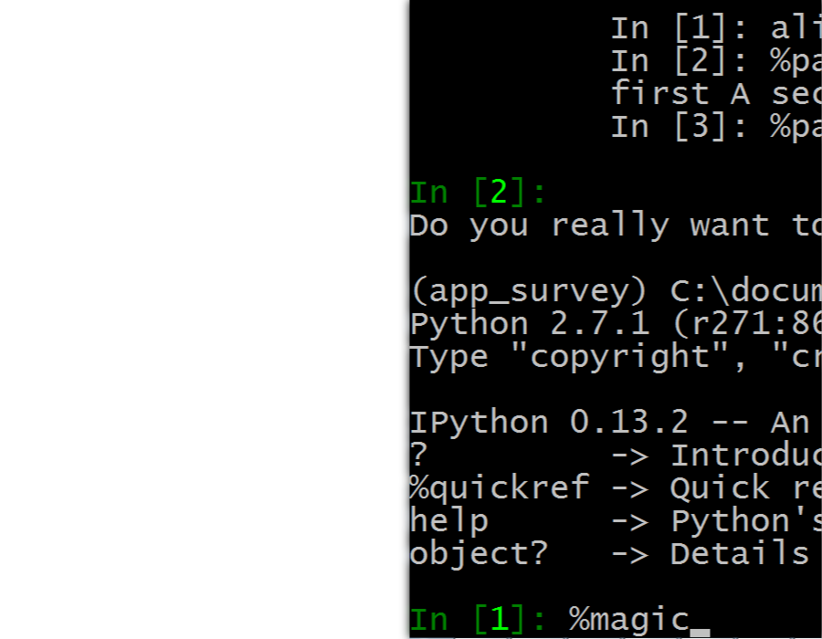

IPython Changes Everything
| Author: | Daniel J. Rocco, Ph.D.
@drocco007
|
|---|

| Author: | Daniel J. Rocco, Ph.D.
@drocco007
|
|---|
Build and explore a live, dynamic object environment
Once […] it seemed everyone had the standard library source at their fingertips. I’m disappointed to report that it is becoming increasingly rare to look at another project’s source code, even among top-notch programmers.
—Raymond Hettinger
source abstraction
vs.
Python tradition
(hint: talk about the whole "what came in the box when you bought Python thing…")
my_var = 'an amazing, fantastic value'
my_var = 42
Hey, whatever man, it's all good
—Python
// notice the required "type declaration"
String my_var = "an amazing, fantastic value";
// "This is NOT going to work"
my_var = 42;
Whoa! You can't do that!
—javac
practice good hygiene
(e.g. don't gratuitously change a variable's type)
favor protocols over inheritance
quacking bird equals duck
testing FTW!

IPython supports tab completion… almost everywhere
- locals
- object attributes
- filenames (!)
why it matters: query object properties, name completion
wildcard search:
?dict.*key*
module?
module??

do stuff
exit
come back
- In [1]: %hist
- <Ctrl-r> for interactive search
ls
!vi ~/some_file.txt
%run file runs a file of Python statements
%edit same but edit first